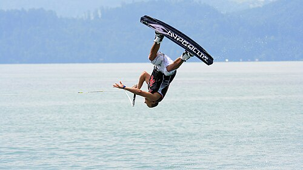

Wakeboarding is a water sport in which the rider, standing on a wakeboard (a board with foot bindings), is towed behind a motorboat across its wake and especially up off the crest in order to perform aerial maneuvers. A hallmark of wakeboarding is the attempted performance of midair tricks. Wakeboarding was developed from a combination of water skiing, snowboarding and surfing techniques.
The rider is usually towed by a rope behind a boat, but can also be towed by cable systems and winches, and be pulled by other motorized vehicles like personal watercraft, cars, trucks, and all-terrain vehicles. The gear and wakeboard boat used are often personalized to each rider's liking.
